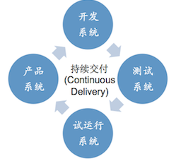
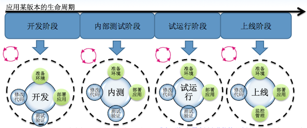

FIT2CLOUD介绍¶
FIT2CLOUD是什么?¶
FIT2CLOUD是一个建立在IaaS之上的云管理及DevOps协作平台，帮助企业提高云成熟度，实现云资源创建自动化、 服务器自动化、混合云管理、应用部署升级自动化和持续交付。
FIT2CLOUD能做什么?¶
FIT2CLOUD能帮助用户更好地使用IaaS, 帮助企业提高云成熟度，实现云资源创建自动化、服务器自动化、混合云 管理、应用部署升级自动化和持续交付基于FIT2CLOUD，企业可以实现应用全生命周期的自动化管理，打通从代码到服务 的转化通道，实现云应用的持续交付和自动化运维。
CMMI即软件能力成熟度集成模型，是国际上衡量软件企业工程开发能力的一个重要标准。CMMI分为5级， 分别为初始级、可管理级、已定义级、量化管理级和优化管理级。在过去几年里，随着云计算的兴起，越来越 多的企业已经开始使用IaaS，但是这些企业对IaaS的使用成熟度差别很大。在这里，我们也对照CMMI成熟度 模型把IaaS云服务使用成熟度分为5级：

目前，大多数的用户，使用IaaS服务，基本上只是使用IaaS快速地创建资源，即虚拟机，存储等， 使用 IaaS云服务的成熟度为第一级，还有一些用户使用Chef, Puppet实现了服务器自动化(Server Automation)， 即成熟度为第二级, 仅有少量用户达到了后面的级别，实现了应用自动化和持续交付，所以普遍使用IaaS的成 熟度提升上有很大的空间, 通过使用FIT2CLOUD, 能够帮助用户更好地使用IaaS，提升云使用成熟度, 从而 更好地让IaaS为企业的业务服务，提升研发和运维的效率，服务的质量，同时按需使用以节约成本。
第一级: 快速地创建资源(Provision Resources)¶
当做开发测试和运行应用服务时，都需要创建环境, 即获取主机，安装操作系统，配置存储和网络。通 过FIT2CLOUD， 用户可以快速地在IaaS里创建出需要的虚拟机。 对于创建虚拟机，如果应用集群比较简单， 集群内虚拟机数量和类型较少时，手工通过IaaS的Web控制台是可以接受的，但是一旦虚拟机类型和数量很多 时，就要通过API的方式自动创建了，这方面典型的工具比如AWS的CloudFormation, 使用FIT2CLOUD, 用户可以事先定义好集群的虚拟机创建计划，然后FIT2CLOUD就会根据计划自动快速创建出需要的大量各种不 同类型的虚拟机。除了快速创建资源外，FIT2CLOUD还将这些虚拟机以集群和虚拟机组的单位进行了归类，从 而管理上也比IaaS的Web控制台方便许多, 不像在IaaS的Web控制台中，当虚拟机数量很多时，需要人手工根 据标签来查找虚拟机。
第二级: 实现服务器自动化(Server Automation)¶
当创建完环境后，即获得了应用运行需要的虚拟机, 存储，网络后，需要在各个虚拟机上安装应用运行时需要的软件包和库， 即运行时环境，通过FIT2CLOUD, 用户可以设定虚拟机启动后要运行的软件包安装脚本，当虚拟机启动后， FIT2CLOUD 就会指定的脚本安装应用运行时需要的软件包库等, 从而实现服务器搭建配置的自动化。 当服务器的应用运行时环境需要更 改时，如打补丁时，可以使用FIT2CLOUD的执行脚本功能，在指定的多个虚拟机上执行，进行运行时环境的配置更改。
第三级: 实现混合云的统一管理(Multi-Cloud)¶
对于很多企业用户而言，基于当前的限制和某些方面的长远考虑，如
基于以上考虑，用户往往会同时使用公有云或私有云，比如AWS中一套，私有云一套，当故障发生时，可以 进行方便快速地切换和恢复; 当需要从一个公有云迁移到另一个公有云时，可以方便地迁移，不需要做太大的调整。 通过使用FIT2CLOUD, 用户可以通过统一的用户接口，概念，将应用部署到不同的公有云和私有云中并管理。
第四级: 实现应用自动化(Application Automation)¶
当我们做开发测试和运维时, 都少不了部署升级, 扩容和新建应用服务， 通过FIT2CLOUD, 我们可以定义 一个应用的环境模板，即集群，及集群里的虚拟机组，然后设置各虚拟机组的组件自动部署脚本，这样每次启 动集群时，启动虚拟机的时候，可以将各个组件自动部署到虚拟机上，而不是每次手动登陆或者手动运行脚本 来部署。 当需要扩容增加某种类型的虚拟机服务器时，只需要修改虚拟机组的最小虚拟机数目，FIT2CLOUD就 会自动启动指定类型的虚拟机，并在虚拟机启动后，自动安装配置启动组件。当需要建立新的应用服务器，直 接从应用的环境模板启动即可。

第五级: 实现持续交付(Continuous Delivery)¶
持续交付是很多研发组织的目标，FIT2CLOUD提供了REST API及SDK，可以方便地与团队的配置管理和 持续集成服务器(如Jenkins)集成，以实现部署流水线, 对DTAP各个环境持续按需自动化部署升级及升级后的 自动化测试, 服务监控，从而最终实现持续交付。
 FIT2CLOUD目前支持阿里云、微软Azure、亚马逊AWS和青云QingCloud。FIT2CLOUD将致力于解决跨平台云管 理问题，未来，FIT2CLOUD将支持更多的公有云和私有云(如Openstack/Cloudstack), 打造中国版RightScale, 让企业能够轻松部署和管理跨公有云、私有云和混合云的重要商业应用，为云基础设施和应用提供配置、监控、自动化和管 理服务。
FIT2CLOUD的产品和解决方案包括：Hosted服务、企业版和SaaS化解决方案。FIT2CLOUD企业版部署在企业自己 的云账户中，完全由企业自主控制。FIT2CLOUD SaaS化解决方案帮助ISV自动化管理云中的成千上万个虚机，转型SaaS 服务提供商。
以下是使用FIT2CLOUD的一些典型使用场景:
FIT2CLOUD的典型使用场景?¶
自动扩展应对峰值,自动收缩节约成本提升ROI¶
场景2: Dev & Test¶
加速开发和测试的过程
提供应用服务创建的自服务¶
场景3: 全栈自动化¶
场景4: DTAP¶
在应用的整个开发测试上线过程中，我们建有相应的开发，测试，试运行，产品环境, 平时经常出现的情况就是 部署到开发测试环境的应用都运行正常，但是部署到产品环境下就会出问题，通过使用Fit2Cloud能够消除各个不同 环境下部署的差异，降低因部署的差异造成的应用部署的失败和应用服务的失败。
场景5: 自动化运维¶
批量给大量虚拟机打补丁
在我们的运维过程中，需要一次给成百上千的虚拟机打补丁，通过FIT2CLOUD的执行脚本功能可以方便地做到这一点， 在FIT2CLOUD中，只需要选择脚本的执行范围，在哪些虚拟机上执行哪个脚本并执行即可。比如2014年发生的openssh 漏洞事件，我们需要给所有的虚拟机打补丁，通过FIT2CLOUD执行脚本功能可以很方便地做到。您可以在FIT2CLOUD的 控制台指定要执行的脚本和要执行脚本的多个虚拟机，之后FIT2CLOUD就会在指定的多个虚拟机上执行指定的脚本。
统一监控及告警
我们在平时的开发测试和运营维护支持过程中，都少不了需要查看环境里机器的状态，比如CPU使用率，load average, 内存，硬盘和网络的情况，特别是运营维护，测试和出问题时分析问题时，都需要，由于IaaS服务提供商只提供一些Hypervisor 支持的监控，对于某些监控数据，如load average, 内存使用量，硬盘使用量，我们无法从IaaS控制台看到，所以需要用 Nagios,Cacti之类的，手动在被监控端及监控页面上进行设置，如果用FIT2CLOUD就不用这么麻烦了，什么都不需要做就可 以看到各个虚拟机的这些基本的监控，另外，做一些简单的设置就可以收到Email告警。
设置安全组
我们建立环境时为了安全起间，需要配置各个虚拟机的防火墙，通过FIT2CLOUD, 我们可以非常方便地在FIT2CLOUD的Web 控制台设置防火墙计划, 防火墙计划有变化时，FIT2CLOUD就会执行防火墙计划配置各个虚拟机防火墙。
自动备份恢复
我们在平时的运营维护支持过程中，为了保证应用服务的可用性和灾难恢复，都少不了做备份和恢复，通过FIT2CLOUD提供 的执行脚本功能，只要实现脚本即可，不需要再做一台管理服务器专门运行这些脚本了，FIT2CLOUD可以作为管理服务器， 只需要告诉FIT2CLOUD什么时候在哪些虚拟机上执行哪些脚本即可。
同时在多个虚拟机执行脚本
我们在平时的开发测试和运营维护支持过程中，经常需要在环境里的多个机器上执行同一个脚本，比如2014 年发生的openssh漏洞事件，我们需要给所有的虚拟机打补丁，通过FIT2CLOUD执行脚本功能可以很方便地做到。 您可以在FIT2CLOUD的控制台执行要执行的脚本和要执行脚本的多个虚拟机，之后FIT2CLOUD就会在指定的多个 虚拟机上执行指定的脚本。
按应用管理虚拟机
在IaaS服务提供商，如AWS,阿里云，青云的控制台中，是以资源类型，地域为维度进行管理的，如果应用类型很多，启动 的虚拟机很多，那么管理起来是很不方便的，而FIT2CLOUD是以应用维度进行管理的，所以在虚拟机很多，环境很多的时候， 如果使用FIT2CLOUD，只需先找到集群，然后从集群虚拟机列表中找出虚拟机即可，找到后，还可以直接从FIT2CLOUD Web 控制台登录到虚拟机，也可以从Web控制台在指定的多个虚拟机上执行脚本。